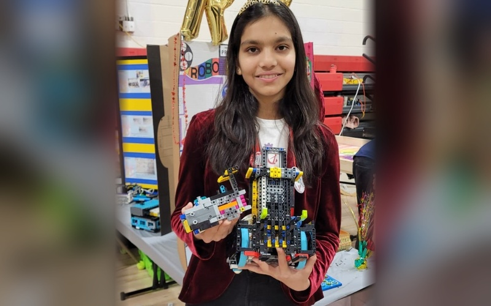

FIRST Tech Challenge — The Lawrenceville School (2024–Present)
On the Lawrenceville School FTC programming team for the BioBuzz season: developing autonomous and driver-assisted motion control with Pedro Pathing, Limelight computer-vision pipelines for AprilTag field localization, and mentoring middle school students.